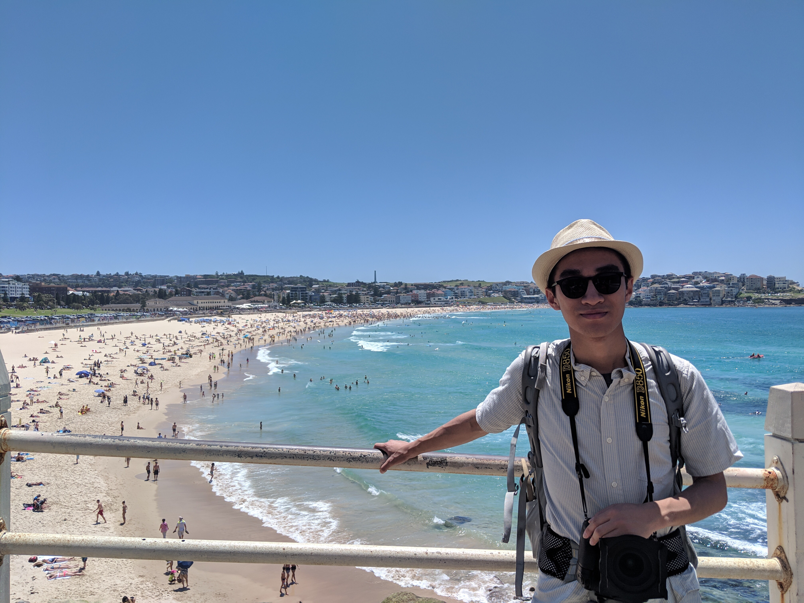

General Information
General Information
Address: 806 W 24th St, Austin, TX, 78705
Phone Number: (512) 806-6098
Email: yifanlyu@Utexas.edu
Education: BS Mathematic, BA Geography, BA Economics, The University of Texas at Austin, 2015 - 2019
Working Experiences
GIS Intern, Lewis Energy Group June 2018 – August 2018
- Created and managed the lease road network for 5 counties in South Texas
- Proposed a new pricing schedule by the distance from wells to disposal. Reduced the annual cost of Saltwater hauling service by $365,064
- Found optimal routes for oil gaugers' fleet. Created a model to assign wells and routes to gaugers
- Developed ArcGIS models to achieve better visualization of polygons and simplify workflow
Research Assistant, Department of Geography and the Environment May 2017 – August 2017
- Worked with professor to find the correlation between drought in Brazil and El Niño & La Niña
- Utilized GDAL library to read and write GeoTIFF data
- Wrote Python script for time series models and generalized linear models to estimate the effect of El Niño & La Niña on drought
- Generated graphic reports of the result of a lagged correlation between indices in some Brazilian regions
Research Assistant, Center for Transportation Research, UT Austin May 2017 – Present
- Collected data through field research; created a catalog for features of more than 30 bridges and overpasses in the Austin District
- Applied ArsGIS into mapping the bridges and overpasses in the Austin District to showcase the aesthetic features
Honors and Accomplishments
Unrestricted Endowed Presidential Scholarship May 2018
College Scholars April 2017, April 2018
Cum laude ampla et magna on the Dean's Honor List Fall 2016, Spring 2016, Fall 2017
Summa cum laude on the Dean's Honor List Spring 2017
University HonorsFall 2015 – Fall 2017
Personal Interests
Photography is my favorite thing to do. I started to take photos when I was 10. I got my first DSLR Nikon D50 from my father. I started to take photos of school events. Later on, I found passion in Landscape photography, and I purchased my second DSLR Nikon D7000. After I got into UT. I joined UT RecSports as a photographer. In my sophomore year, I started to work at student newspaper -- The Daily Texan as a photojournalist. I recently got my third camera Nikon D850.Interesting Link
This is a map of all the flights I have taken
Maps generated by the Great Circle Mapper - copyright © Karl L. Swartz.
Yifan Lyu
Feb 11, 2019